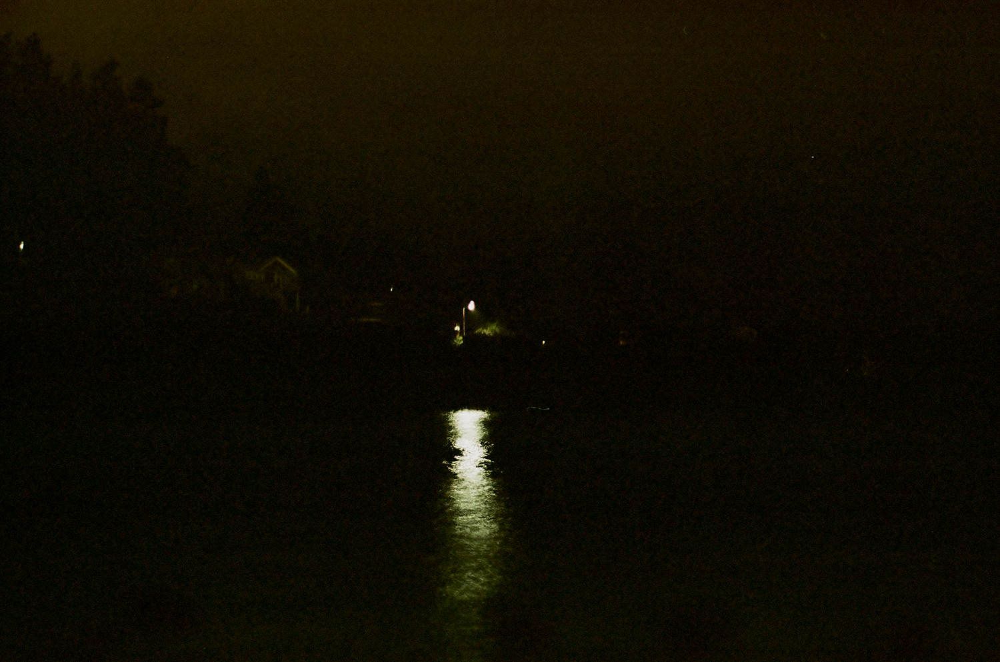
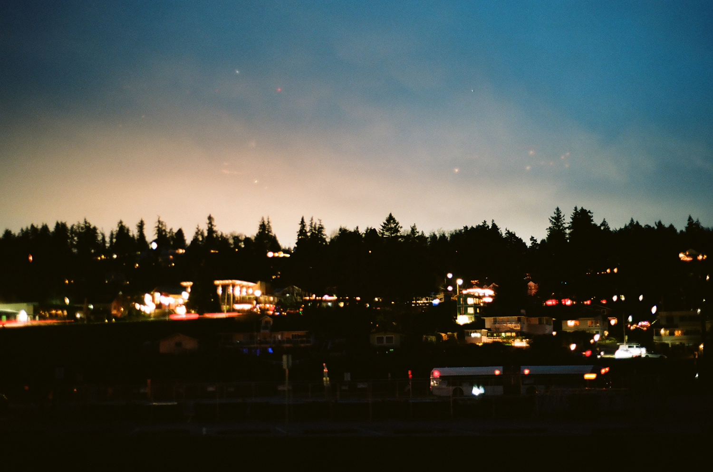
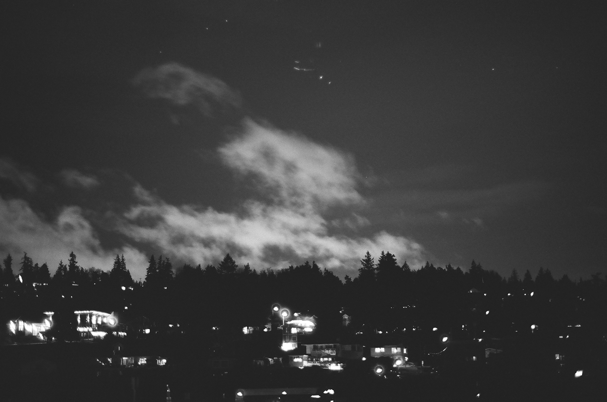
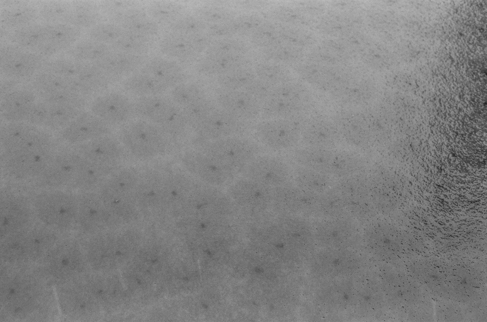
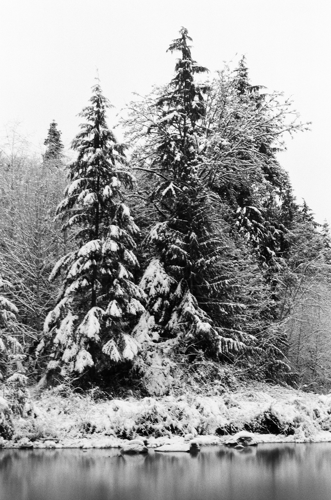
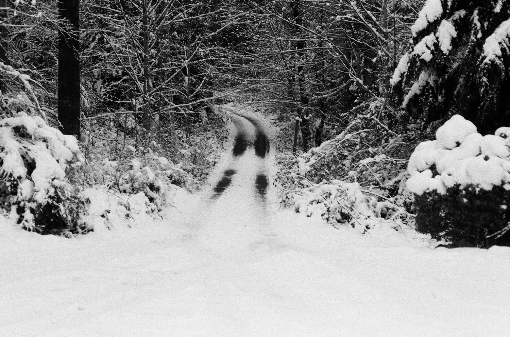

This site was put together from two rolls of film that I took. A lot of the photos felt like they naturally went together but these are a few of the misfits. There's a photo of jellyfish from the aquarium (see above), there's one of a light on the water from a very early morning ferry ride, there are two of Mukilteo around dawn (one in black and white and one in color), and the rest are black and white photos from the snow days.
   (The above is of a frozen pond starting to melt)
 